")
Dungeoneering - Crafting Tables
Introduction
To gather mastyx hides to make ranged armour from, you must be raiding a dungeon on the following complexity level:
Complexity level 4+ - Making armour, hunting
Click here to read more about Crafting in RuneScape.
Crafting Leather Armour
Mastyx hides can be gained by killing any docile bovimastyx you find roaming the floors of Daemonheim. This will only provide you with one hide per mastyx, however, so it is often worth trapping them to keep their hides intact. For more information on hunting in Daemonheim, visit the Complexity level 4 page. Successfully hunting a mastyx will result in a greater number of hides.
Hides do not need to be tanned. Needles and thread can be bought from the smuggler in the starting room.
Protoleather:
| Item | Crafting Level Required | Tools Required | Experience Points Gained |
![[image]](../../img/main/kbase/skills/dungeoneering/items/armour/protoleather_vambraces.gif) Protoleather vambraces |
1 |
Protomastyx hide x 1 Needle Thread |
13.1 |
| 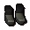Protoleather boots | 3 |
Protomastyx hide x 1 Needle Thread |
14.8 |
| 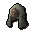Protoleather coif | 5 |
Protomastyx hide x 2 Needle Thread |
33 |
| 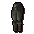 Protoleather chaps |
7 |
Protomastyx hide x 3 Needle Thread |
54.6 |
![[image]](../../img/main/kbase/skills/dungeoneering/items/armour/protoleather_body.gif) Protoleather body |
9 |
Protomastyx hide x 5 Needle Thread |
99.5 |
Subleather:
| Item | Crafting Level Required | Tools Required | Experience Points Gained |
| 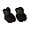 Subleather vambraces |
11 |
Submastyx hide x 1 Needle Thread |
21.6 |
![[image]](../../img/main/kbase/skills/dungeoneering/items/armour/subleather_boots.gif) Subleather boots Subleather boots |
13 |
Submastyx hide x 1 Needle Thread |
23.3 |
![[image]](../../img/main/kbase/skills/dungeoneering/items/armour/subleather_coif.gif) Subleather coif Subleather coif |
15 |
Submastyx hide x 2 Needle Thread |
50 |
![[image]](../../img/main/kbase/skills/dungeoneering/items/armour/subleather_chaps.gif) Subleather chaps |
17 |
Submastyx hide x 3 Needle Thread |
80.1 |
| 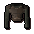 Subleather body |
19 |
Submastyx hide x 5 Needle Thread |
142.0 |
Paraleather:
| Item | Crafting Level Required | Tools Required | Experience Points Gained |
| 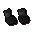 Paraleather vambraces |
21 |
Paramastyx hide x 1 Needle Thread |
30.1 |
![[image]](../../img/main/kbase/skills/dungeoneering/items/armour/paraleather_boots.gif) Paraleather boots Paraleather boots |
23 |
Paramastyx hide x 1 Needle Thread |
31.8 |
![[image]](../../img/main/kbase/skills/dungeoneering/items/armour/paraleather_coif.gif) Paraleather coif Paraleather coif |
25 |
Paramastyx hide x 2 Needle Thread |
67 |
![[image]](../../img/main/kbase/skills/dungeoneering/items/armour/paraleather_chaps.gif) Paraleather chaps |
27 |
Paramastyx hide x 3 Needle Thread |
105.6 |
| 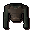 Paraleather body |
29 |
Paramastyx hide x 5 Needle Thread |
184.5 |
Archleather:
| Item | Crafting Level Required | Tools Required | Experience Points Gained |
![[image]](../../img/main/kbase/skills/dungeoneering/items/armour/archleather_vambraces.gif) Archleather vambraces |
31 |
Archaemastyx hide x 1 Needle Thread |
38.6 |
![[image]](../../img/main/kbase/skills/dungeoneering/items/armour/archleather_boots.gif) Archleather boots Archleather boots |
33 |
Archaemastyx hide x 1 Needle Thread |
40.3 |
| 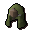Archleather coif | 35 |
Archaemastyx hide x 2 Needle Thread |
84 |
| 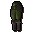 Archleather chaps |
37 |
Archaemastyx hide x 3 Needle Thread |
131.1 |
![[image]](../../img/main/kbase/skills/dungeoneering/items/armour/archleather_body.gif) Archleather body |
39 |
Archaemastyx hide x 5 Needle Thread |
269.5 |
Dromoleather:
| Item | Crafting Level Required | Tools Required | Experience Points Gained |
![[image]](../../img/main/kbase/skills/dungeoneering/items/armour/dromoleather_vambraces.gif) Dromoleather vambraces |
41 |
Dromomastyx hide x 1 Needle Thread |
47.1 |
![[image]](../../img/main/kbase/skills/dungeoneering/items/armour/dromoleather_boots.gif) Dromoleather boots Dromoleather boots |
43 |
Dromomastyx hide x 1 Needle Thread |
48.8 |
![[image]](../../img/main/kbase/skills/dungeoneering/items/armour/dromoleather_coif.gif) Dromoleather coif Dromoleather coif |
45 |
Dromomastyx hide x 2 Needle Thread |
101 |
| 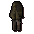 Dromoleather chaps |
47 |
Dromomastyx hide x 3 Needle Thread |
156.6 |
![[image]](../../img/main/kbase/skills/dungeoneering/items/armour/dromoleather_body.gif) Dromoleather body |
49 |
Dromomastyx hide x 5 Needle Thread |
269.5 |
Spinoleather:
(m) = Members Only
| Item | Crafting Level Required | Tools Required | Experience Points Gained |
| 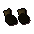 Spinoleather vambraces (m) |
51 |
Spinomastyx hide x 1 Needle Thread |
55.6 |
![[image]](../../img/main/kbase/skills/dungeoneering/items/armour/spinoleather_boots.gif) Spinoleather boots (m) Spinoleather boots (m) |
53 |
Spinomastyx hide x 1 Needle Thread |
57.3 |
| 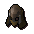Spinoleather coif (m) | 55 |
Spinomastyx hide x 2 Needle Thread |
118.0 |
![[image]](../../img/main/kbase/skills/dungeoneering/items/armour/spinoleather_chaps.gif) Spinoleather chaps (m) |
57 |
Spinomastyx hide x 3 Needle Thread |
182.1 |
![[image]](../../img/main/kbase/skills/dungeoneering/items/armour/spinoleather_body.gif) Spinoleather body (m) |
59 |
Spinomastyx hide x 5 Needle Thread |
312 |
Gallileather:
(m) = Members Only
| Item | Crafting Level Required | Tools Required | Experience Points Gained |
![[image]](../../img/main/kbase/skills/dungeoneering/items/armour/gallileather_vambraces.gif) Gallileather vambraces (m) |
61 |
Gallimastyx hide x 1 Needle Thread |
64.1 |
| 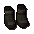Gallileather boots (m) | 63 |
Gallimastyx hide x 1 Needle Thread |
65.8 |
![[image]](../../img/main/kbase/skills/dungeoneering/items/armour/gallileather_coif.gif) Gallileather coif (m) Gallileather coif (m) |
65 |
Gallimastyx hide x 2 Needle Thread |
135 |
![[image]](../../img/main/kbase/skills/dungeoneering/items/armour/gallileather_chaps.gif) Gallileather chaps (m) |
67 |
Gallimastyx hide x 3 Needle Thread |
207.6 |
![[image]](../../img/main/kbase/skills/dungeoneering/items/armour/gallileather_body.gif) Gallileather body (m) |
69 |
Gallimastyx hide x 5 Needle Thread |
354.5 |
Stegoleather:
(m) = Members Only
| Item | Crafting Level Required | Tools Required | Experience Points Gained |
![[image]](../../img/main/kbase/skills/dungeoneering/items/armour/stegoleather_vambraces.gif) Stegoleather vambraces (m) |
71 |
Stegomastyx hide x 1 Needle Thread |
72.6 |
| 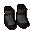Stegoleather boots (m) | 73 |
Stegomastyx hide x 1 Needle Thread |
74.3 |
| 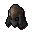Stegoleather coif (m) | 75 |
Stegomastyx hide x 2 Needle Thread |
152 |
![[image]](../../img/main/kbase/skills/dungeoneering/items/armour/stegoleather_chaps.gif) Stegoleather chaps (m) |
77 |
Stegomastyx hide x 3 Needle Thread |
233.1 |
![[image]](../../img/main/kbase/skills/dungeoneering/items/armour/stegoleather_body.gif) Stegoleather body (m) |
79 |
Stegomastyx hide x 5 Needle Thread |
397 |
Megaleather:
(m) = Members Only
| Item | Crafting Level Required | Tools Required | Experience Points Gained |
| 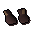 Megaleather vambraces (m) |
81 |
Megamastyx hide x 1 Needle Thread |
81.1 |
![[image]](../../img/main/kbase/skills/dungeoneering/items/armour/megaleather_boots.gif) Megaleather boots (m) Megaleather boots (m) |
83 |
Megamastyx hide x 1 Needle Thread |
82.8 |
![[image]](../../img/main/kbase/skills/dungeoneering/items/armour/megaleather_coif.gif) Megaleather coif (m) Megaleather coif (m) |
85 |
Megamastyx hide x 2 Needle Thread |
169 |
![[image]](../../img/main/kbase/skills/dungeoneering/items/armour/megaleather_chaps.gif) Megaleather chaps (m) |
87 |
Megamastyx hide x 3 Needle Thread |
258.6 |
![[image]](../../img/main/kbase/skills/dungeoneering/items/armour/megaleather_body.gif) Megaleather body (m) |
89 |
Megamastyx hide x 5 Needle Thread |
439.5 |
Tyrannoleather:
(m) = Members Only
| Item | Crafting Level Required | Tools Required | Experience Points Gained |
| 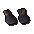 Tyrannoleather vambraces (m) |
91 |
Tyrannomastyx hide x 1 Needle Thread |
89.6 |
![[image]](../../img/main/kbase/skills/dungeoneering/items/armour/tyrannoleather_boots.gif) Tyrannoleather boots (m) Tyrannoleather boots (m) |
93 |
Tyrannomastyx hide x 1 Needle Thread |
91.3 |
![[image]](../../img/main/kbase/skills/dungeoneering/items/armour/tyrannoleather_coif.gif) Tyrannoleather coif (m) Tyrannoleather coif (m) |
95 |
Tyrannomastyx hide x 2 Needle Thread |
186 |
![[image]](../../img/main/kbase/skills/dungeoneering/items/armour/tyrannoleather_chaps.gif) Tyrannoleather chaps (m) |
97 |
Tyrannomastyx hide x 3 Needle Thread |
284.1 |
![[image]](../../img/main/kbase/skills/dungeoneering/items/armour/tyrannoleather_body.gif) Tyrannoleather body (m) |
99 |
Tyrannomastyx hide x 5 Needle Thread |
482 |
Crafting Clothing
Just as upon the surface, mages' robes are made from cloth, and cloth is derived from plants. While you may find these plants growing around the dungeon or receive them as drops from some of the dungeon's inhabitants, you can also farm them if you find the correct seeds and a farming patch.
With the textile in your inventory, you will need to spin it to make the required material. Spinning wheels can be found in the starting room of the dungeon. Using a needle and thread, both bought from the smuggler, you can make mage clothing.
Salve cloth:
| Item | Crafting Level Required | Tools Required | Experience Points Gained |
| 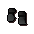 Salve gloves |
1 |
Salve cloth x 1 Needle Thread |
12.5 |
![[image]](../../img/main/kbase/skills/dungeoneering/items/armour/salve_shoes.gif) Salve shoes Salve shoes |
2 |
Salve cloth x 1 Needle Thread |
14.2 |
![[image]](../../img/main/kbase/skills/dungeoneering/items/armour/salve_hood.gif) Salve hood Salve hood |
4 |
Salve cloth x 2 Needle Thread |
31.8 |
![[image]](../../img/main/kbase/skills/dungeoneering/items/armour/salve_robe_bottom.gif) Salve robe bottom Salve robe bottom |
6 |
Salve cloth x 3 Needle Thread |
52.8 |
| 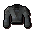 Salve robe top |
8 |
Salve cloth x 5 Needle Thread |
96.5 |
Wildercress cloth:
| Item | Crafting Level Required | Tools Required | Experience Points Gained |
![[image]](../../img/main/kbase/skills/dungeoneering/items/armour/wildercress_gloves.gif) Wildercress gloves |
10 |
Wildercress cloth x 1 Needle Thread |
21 |
![[image]](../../img/main/kbase/skills/dungeoneering/items/armour/wildercress_shoes.gif) Wildercress shoes Wildercress shoes |
12 |
Wildercress cloth x 1 Needle Thread |
22.7 |
![[image]](../../img/main/kbase/skills/dungeoneering/items/armour/wildercress_hood.gif) Wildercress hood Wildercress hood |
14 |
Wildercress cloth x 2 Needle Thread |
48.8 |
![[image]](../../img/main/kbase/skills/dungeoneering/items/armour/wildercress_robe_bottom.gif) Wildercress robe bottom Wildercress robe bottom |
16 |
Wildercress cloth x 3 Needle Thread |
78.3 |
![[image]](../../img/main/kbase/skills/dungeoneering/items/armour/wildercress_robe_top.gif) Wildercress robe top |
18 |
Wildercress cloth x 5 Needle Thread |
139 |
Blightleaf cloth:
| Item | Crafting Level Required | Tools Required | Experience Points Gained |
| 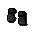 Blightleaf gloves |
20 |
Blightleaf cloth x 1 Needle Thread |
29.5 |
| 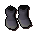Blightleaf shoes | 22 |
Blightleaf cloth x 1 Needle Thread |
31.2 |
![[image]](../../img/main/kbase/skills/dungeoneering/items/armour/blightleaf_hood.gif) Blightleaf hood Blightleaf hood |
24 |
Blightleaf cloth x 2 Needle Thread |
65.8 |
| 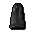Blightleaf robe bottom | 26 |
Blightleaf cloth x 3 Needle Thread |
103.8 |
| 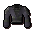 Blightleaf robe top |
28 |
Blightleaf cloth x 5 Needle Thread |
181.5 |
Roseblood cloth:
| Item | Crafting Level Required | Tools Required | Experience Points Gained |
![[image]](../../img/main/kbase/skills/dungeoneering/items/armour/roseblood_gloves.gif) Roseblood gloves |
30 |
Roseblood cloth x 1 Needle Thread |
38 |
| 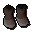Roseblood shoes | 32 |
Roseblood cloth x 1 Needle Thread |
39.7 |
![[image]](../../img/main/kbase/skills/dungeoneering/items/armour/roseblood_hood.gif) Roseblood hood Roseblood hood |
34 |
Roseblood cloth x 2 Needle Thread |
82.8 |
![[image]](../../img/main/kbase/skills/dungeoneering/items/armour/roseblood_robe_bottom.gif) Roseblood robe bottom Roseblood robe bottom |
36 |
Roseblood cloth x 3 Needle Thread |
129.3 |
| 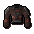 Roseblood robe top |
38 |
Roseblood cloth x 5 Needle Thread |
224 |
Bryll cloth:
| Item | Crafting Level Required | Tools Required | Experience Points Gained |
![[image]](../../img/main/kbase/skills/dungeoneering/items/armour/bryll_gloves.gif) Bryll gloves |
40 |
Bryll cloth x 1 Needle Thread |
46.5 |
![[image]](../../img/main/kbase/skills/dungeoneering/items/armour/bryll_shoes.gif) Bryll shoes Bryll shoes |
42 |
Bryll cloth x 1 Needle Thread |
48.2 |
![[image]](../../img/main/kbase/skills/dungeoneering/items/armour/bryll_hood.gif) Bryll hood Bryll hood |
44 |
Bryll cloth x 2 Needle Thread |
99.8 |
| 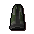Bryll robe bottom | 46 |
Bryll cloth x 3 Needle Thread |
154.8 |
![[image]](../../img/main/kbase/skills/dungeoneering/items/armour/bryll_robe_top.gif) Bryll robe top |
48 |
Bryll cloth x 5 Needle Thread |
266.5 |
Duskweed cloth:
(m) = Members Only
| Item | Crafting Level Required | Tools Required | Experience Points Gained |
![[image]](../../img/main/kbase/skills/dungeoneering/items/armour/duskweed_gloves.gif) Duskweed gloves (m) |
50 |
Duskweed cloth x 1 Needle Thread |
55 |
![[image]](../../img/main/kbase/skills/dungeoneering/items/armour/duskweed_shoes.gif) Duskweed shoes (m) Duskweed shoes (m) |
52 |
Duskweed cloth x 1 Needle Thread |
56.7 |
![[image]](../../img/main/kbase/skills/dungeoneering/items/armour/duskweed_hood.gif) Duskweed hood (m) Duskweed hood (m) |
54 |
Duskweed cloth x 2 Needle Thread |
116.8 |
![[image]](../../img/main/kbase/skills/dungeoneering/items/armour/duskweed_robe_bottom.gif) Duskweed robe bottom (m) Duskweed robe bottom (m) |
56 |
Duskweed cloth x 3 Needle Thread |
180.3 |
![[image]](../../img/main/kbase/skills/dungeoneering/items/armour/duskweed_robe_top.gif) Duskweed robe top (m) |
58 |
Duskweed cloth x 5 Needle Thread |
309 |
Soulbell cloth:
(m) = Members Only
| Item | Crafting Level Required | Tools Required | Experience Points Gained |
![[image]](../../img/main/kbase/skills/dungeoneering/items/armour/soulbell_gloves.gif) Soulbell gloves (m) |
60 |
Soulbell cloth x 1 Needle Thread |
63.5 |
![[image]](../../img/main/kbase/skills/dungeoneering/items/armour/soulbell_shoes.gif) Soulbell shoes (m) Soulbell shoes (m) |
62 |
Soulbell cloth x 1 Needle Thread |
65.2 |
| 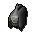Soulbell hood (m) | 64 |
Soulbell cloth x 2 Needle Thread |
133.8 |
![[image]](../../img/main/kbase/skills/dungeoneering/items/armour/soulbell_robe_bottom.gif) Soulbell robe bottom (m) Soulbell robe bottom (m) |
66 |
Soulbell cloth x 3 Needle Thread |
205.8 |
![[image]](../../img/main/kbase/skills/dungeoneering/items/armour/soulbell_robe_top.gif) Soulbell robe top (m) |
68 |
Soulbell cloth x 5 Needle Thread |
351.5 |
Ectocloth:
(m) = Members Only
| Item | Crafting Level Required | Tools Required | Experience Points Gained |
| 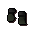 Ectogloves (m) |
70 |
Ectocloth x 1 Needle Thread |
72 |
| 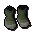Ectoshoes (m) | 72 |
Ectocloth x 1 Needle Thread |
73.7 |
| 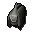Ectohood (m) | 74 |
Ectocloth x 2 Needle Thread |
150.8 |
| 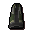Ectorobe bottom (m) | 76 |
Ectocloth x 3 Needle Thread |
231.3 |
![[image]](../../img/main/kbase/skills/dungeoneering/items/armour/ectorobe_top.gif) Ectorobe top (m) |
78 |
Ectocloth x 5 Needle Thread |
394 |
Runic cloth:
(m) = Members Only
| Item | Crafting Level Required | Tools Required | Experience Points Gained |
![[image]](../../img/main/kbase/skills/dungeoneering/items/armour/runic_gloves.gif) Runic gloves (m) |
80 |
Runic cloth x 1 Needle Thread |
80.5 |
![[image]](../../img/main/kbase/skills/dungeoneering/items/armour/runic_shoes.gif) Runic shoes (m) Runic shoes (m) |
82 |
Runic cloth x 1 Needle Thread |
82.2 |
| 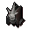Runic hood (m) | 84 |
Runic cloth x 2 Needle Thread |
167.8 |
![[image]](../../img/main/kbase/skills/dungeoneering/items/armour/runic_robe_bottom.gif) Runic robe bottom (m) Runic robe bottom (m) |
86 |
Runic cloth x 3 Needle Thread |
256.8 |
![[image]](../../img/main/kbase/skills/dungeoneering/items/armour/runic_robe_top.gif) Runic robe top (m) |
88 |
Runic cloth x 5 Needle Thread |
439.5 |
Spiritbloom cloth:
(m) = Members Only
| Item | Crafting Level Required | Tools Required | Experience Points Gained |
![[image]](../../img/main/kbase/skills/dungeoneering/items/armour/spiritbloom_gloves.gif) Spiritbloom gloves (m) |
90 |
Spiritbloom cloth x 1 Needle Thread |
89.0 |
![[image]](../../img/main/kbase/skills/dungeoneering/items/armour/spiritbloom_shoes.gif) Spiritbloom shoes (m) Spiritbloom shoes (m) |
92 |
Spiritbloom cloth x 1 Needle Thread |
90.7 |
![[image]](../../img/main/kbase/skills/dungeoneering/items/armour/spiritbloom_hood.gif) Spiritbloom hood (m) Spiritbloom hood (m) |
94 |
Spiritbloom cloth x 2 Needle Thread |
184.8 |
![[image]](../../img/main/kbase/skills/dungeoneering/items/armour/spiritbloom_robe_bottom.gif) Spiritbloom robe bottom (m) Spiritbloom robe bottom (m) |
96 |
Spiritbloom cloth x 3 Needle Thread |
282.3 |
![[image]](../../img/main/kbase/skills/dungeoneering/items/armour/spiritbloom_robe_top.gif) Spiritbloom robe top (m) |
98 |
Spiritbloom cloth x 5 Needle Thread |
482 |

More articles in
Dungeoneering
|
|
|
Further Help
If this article does not help you, you may find the following sections of the RuneScape site helpful:
|
|